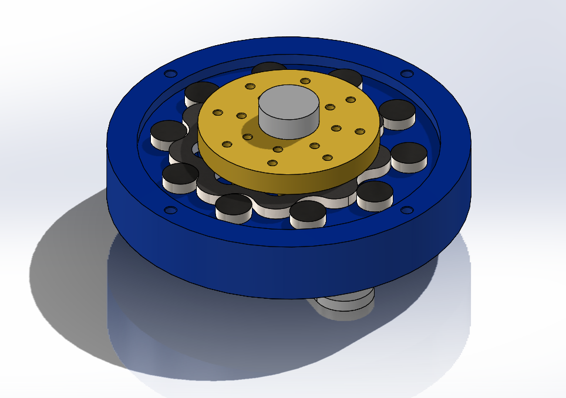
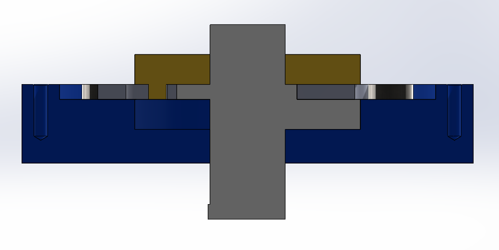
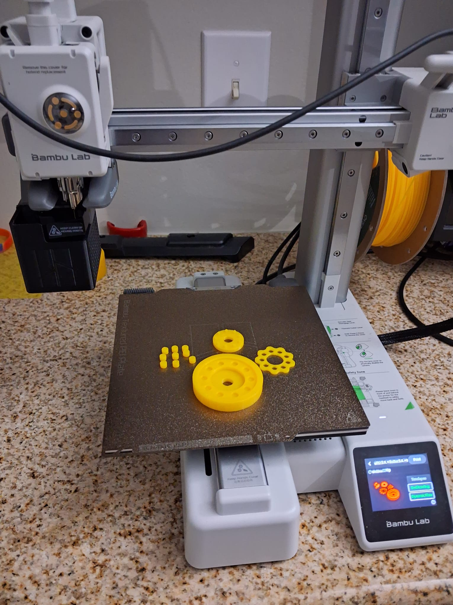

Development of a Human-Aware Navigation Framework for Autonomous Mobile Robots
A fuzzy logic and potential field-based motion planning framework prioritizing human safety and comfort in human-robot interactions.
What is the problem that I am trying to solve?
As robots move from traditional settings like factories into public spaces like hospitals and resturants, navigation must account for human related factors like human comfort, safety and preferences—not just obstacle avoidance.


What is Human-Aware Navigation?
Human-Aware Navigation (HAN) enables robots to account these human related factors in the form of predefined rules derived from experimentation and literature review. The field of HAN is analogus and often finds itself overlapping with situation-aware navigation. Overall, HAN consists of wide range sub-fields like perception, motion prediction, human-robot behavior psychology, etc...... However, my work solely concentrates on developing a base framework on which few of these human-related rules can be modelled and focuses on path planning aspect. The general idea is that once this layer is built, the other layers of HAN like perception can be constructed.

So, what are these rules?
dd
Design Features
- 9:1 single-stage reduction using 10 pins and 9-lobe cycloidal disc
- Input via eccentric shaft (eccentricity = 3.5 mm) connected to NEMA 17 motor
- Designed with tolerances suitable for FDM 3D printing
- Aim to achieve minimal backlash and good torque-to-size ratio



Motion Simulation
Next Steps
The next phase involves completing the assembly and evaluating the printed prototype under load conditions. Improvements will focus on structural strength, compactness, and stackability to build gearboxes for robotic joint actuation. Integration with sensors and drivers is planned for future iterations.